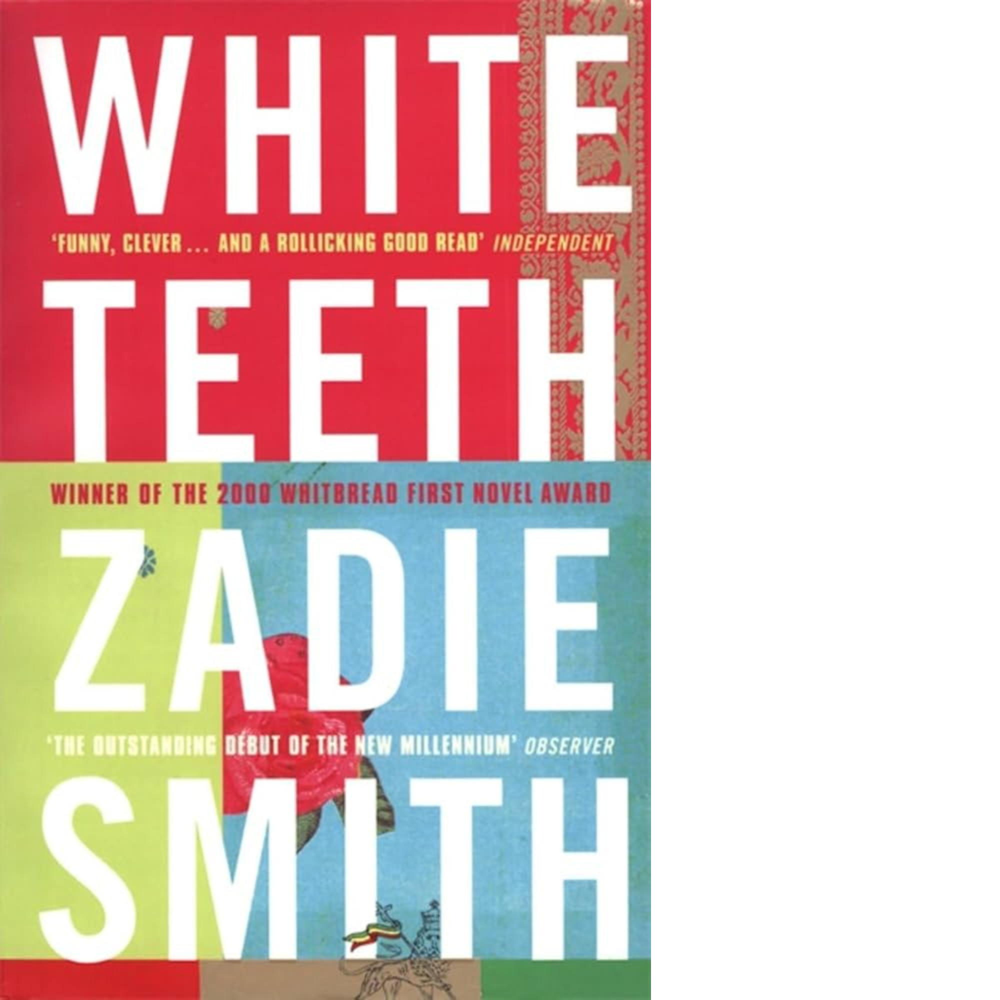
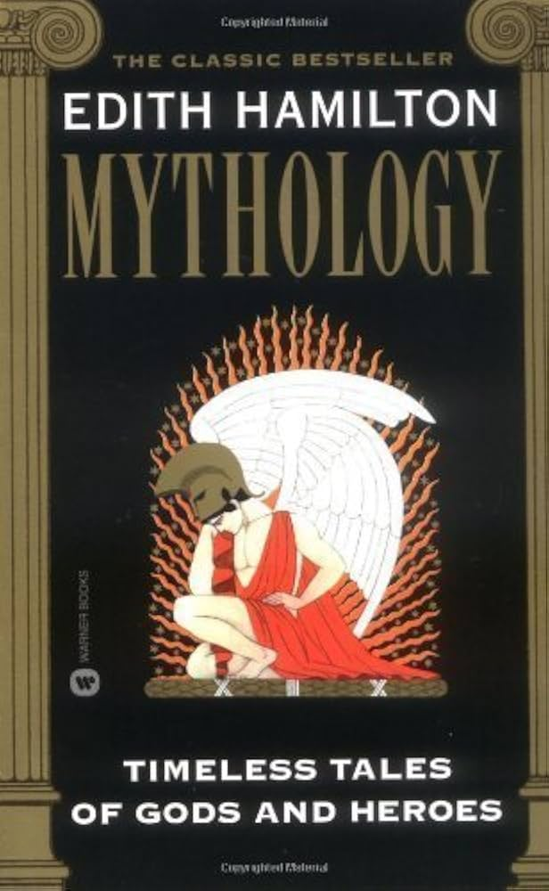

My Favorites
Here are some of my favorite books, albums, and movies that inspire and entertain me.
Books I Love
High Fidelity

White Teeth
Paradise

City of Girls

Mythology
The House of Mirth
Music

The Miseducation of Lauryn Hill
Skin
Ella Fitzgerald Sings the Duke Ellington Songbook
Movies
Emma
Bachelorette
Obvious Child